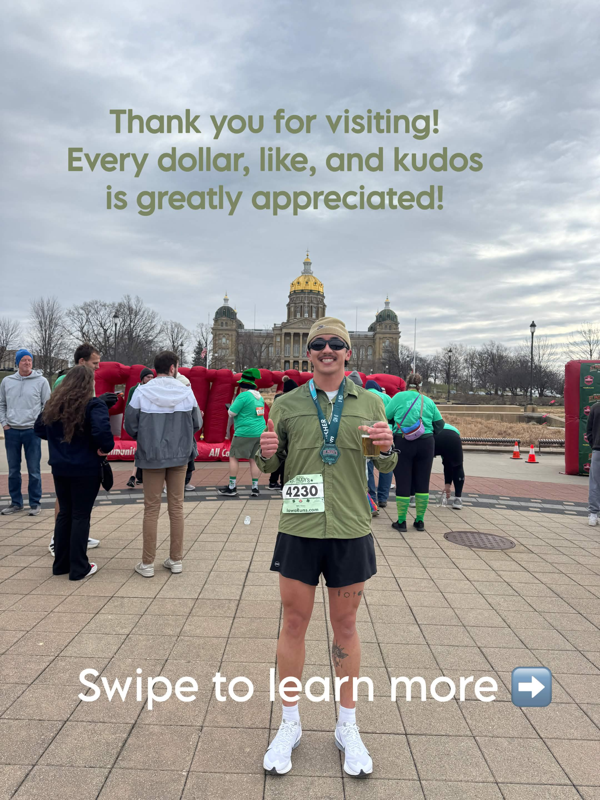

Caden's Run for the ACS
Until the Chicago Marathon
0 days
Sunday, October 10, 2027

Fundraising progress
$0 raised of $0
Strava
If you're curious to see how my training is going, check out my Strava.
Open Strava My latest runsI post each challenge on Instagram when a milestone is reached.
Preview only: set instagramUrl in js/main.js to link your account. This box stays hidden on the live site until you do.
Help me reach the finish line
Give what you can. Share the page if you can't. Anything helps, THANK YOU!!
Donate on GivenGain